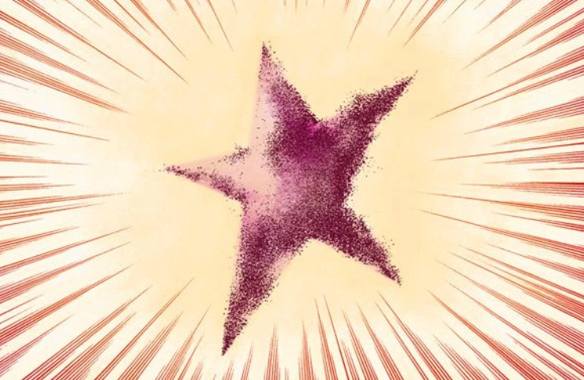
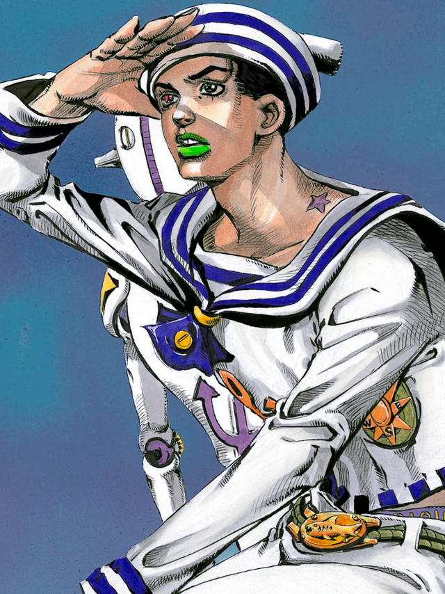
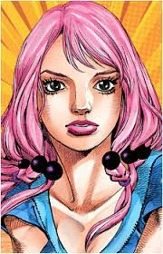
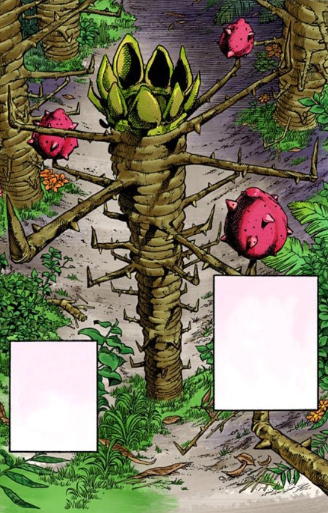
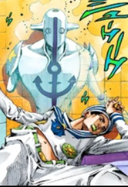
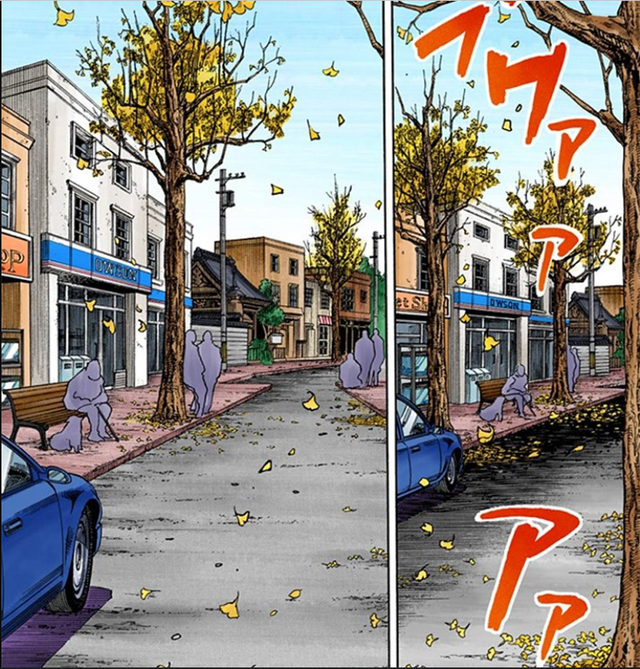
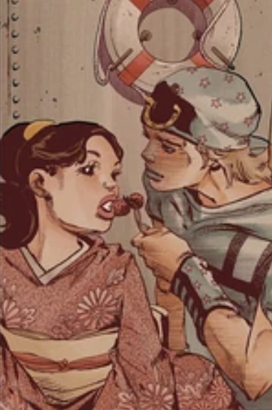

Розділ Перший: Людина з Амнезією
 --натисни, щоб прочитати про Хигашиката/ДжостарЯсухо Хиросе,скрываясь от Джошу Хигашиката возле стен города Морио, обнаруживает обнаженного мужчину в безкозырке, наполовину скрытого под землей. После того, как она вызывает скорую помощь, Ясухо замечает на плече звездообразное родимое пятно в окружении свежего укуса. Более того, мужчина спрашивает его имя. После того, как она вытаскивает его из-под земли, между Джошу и мужчиной с амнезией вспыхивает драка, во время которой мыльный пузырь появляется из плеча моряка и, по-видимому, заставляет взорвать глаза Джошу. Мужчина теряет сознание, прежде чем их все доставят в больницу. В повествовании Ясухо объясняет версию, как поднялись видящие стены с одновременным землетрясением в Тохоку 2011 года. Массивные, скальные выступы, отмеченные длинными вертикальными отверстиями, поднялись между береговой линией и материком, блокируя шоссе, водные пути, газопроводы и линии электропередач.
___Персонажі___
Джоске Хігашиката
 --натисни, щоб прочитати про Джоске ХигашикатаЯсухо Хіросе
 --натисни, щоб прочитати про Ясухо Хіросе___Організації___
 --натисни, щоб прочитати про організацію Локакака“ Я знаю, что есть какой-то тёмный враг, проскользнувший в общество... Пока существуют фрукты, известные как Локакака, они будут делать всё возможное, чтобы заполучить их. ” —Рай Мамедзуку, JJL Chapter 65
Организация Локакака является секретной организацией по исследованию и контрабанде плодов Локакака, при этом почти все её члены, это Каменные Люди. Члены группы, все из которых являются пользователями стендов, выступают в качестве основной антагонистической силы в JoJolion.
____Наступні розділи____
| Первая зацепка | Поиск личности | Дорога Вымогательств и Джонни Джостар |
|  |  |  |